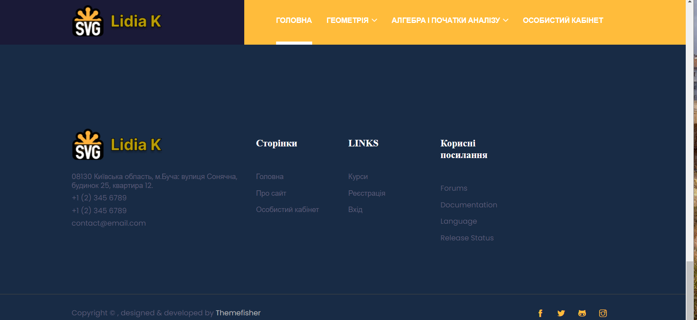
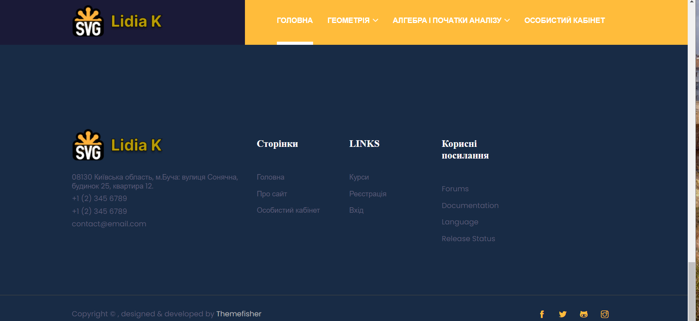

"Сайт будівельногї компанії"
Наш адаптивний та сучасний веб-сайт будівельної компанії — це віртуальний простір, створений з урахуванням найновіших технологій та вимог сучасного користувача. Його основним перевагою є адаптивний дизайн, який гарантує безперешкодний доступ та зручний перегляд на будь-яких пристроях, починаючи від персональних комп'ютерів і закінчуючи мобільними пристроями
Кожна сторінка сайту присвячена конкретній темі, починаючи від наших проектів та послуг і закінчуючи актуальними новинами в галузі будівництва. Великий акцент робиться на інтерактивності: відвідувачі можуть легко знайти необхідну інформацію, взаємодіяти з представниками компанії через форми зворотного зв'язку та отримувати онлайн-консультації.
Додатково, сайт вражає візуальною привабливістю завдяки фотографіям завершених проектів, а також забезпечує доступ до детального портфоліо та відгуків клієнтів. За допомогою цього веб-сайту ми прагнемо створити незабутнє враження та забезпечити зручний інструмент для взаємодії з нашою аудиторією.
"Погода React"
Програма написана на React. Показує погоду в усіх городах світу. Використана работа з API.
"Сайт студентки ВУЗа"
Комерційний проект, по завданню, для студентки 2 курсу - ПРОГРАМНА ІНЖЕНЕРІЯ
 

"Адаптивний шаблон сайту"
Цей адаптивний веб-шаблон – ідеальний вибір для тих, хто прагне представити свої проекти та досягнення в стилі із запаморочливим та сучасним дизайном. Основні особливості: адаптивний дизайн, гнучкі гріди, швидка завантаження та оптимізація для пошукових систем (SEO), легка налаштовується та розширюється.
"Прокат та продаж каяків, та іншіх плавзасобів"
Цей адаптивний веб-шаблон, для сайту прокату каяків – ідеальний вибір для тих, хто прагне представити свої проекти та досягнення в стилі із запаморочливим та сучасним дизайном. Основні особливості: адаптивний дизайн, гнучкі гріди, швидка завантаження та оптимізація для пошукових систем (SEO), легка налаштовується та розширюється.
"Сайт дитячього психолога, на шаблоні bootstrap"
Цей адаптивний веб-шаблон, школи Емолект. Підготовлений для переноса на CMS WP
"Адаптивний шаблон сайта ресторана , чи системи обслуговування"
Цей адаптивний веб-шаблон, який можна використати для створення інтернет магазину на CMS , чи як самописний.
×